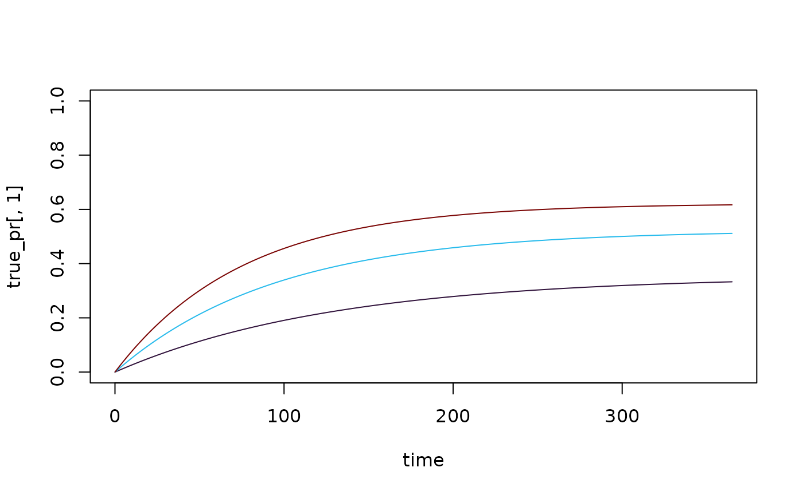

The SIS Module
Generalized, Modular SIS Infection Dynamics
Source:vignettes/human_sis.Rmd
human_sis.RmdXname = "SIS"For the XH component, the SIS
module implements a basic system of differential equations, that is
often called the SIS compartment model (see Figure 1).
This vignette describes the model and its implementation in
ramp.xds. For a more mathematical
introduction, see Malaria Theory – SIS Dynamics

At basic setup, the SIS module with defaults is specified like this:
Basic Dynamics
The following describes the notation and basic setup, including variable and parameter names.
The Compartment Model
A population is subdivided into susceptible (\(S\)) and infected and infectious (\(I\)) individuals, where the total population is \(H = S+I.\)
We let \(h\) denote the force of infection (FoI).
We let \(r\) denote the clearance rate for infections.
The dynamics are described by a pair of equations:
\[ \begin{array}{rl} \frac{dS}{dt} &= -hS + rI \\ \frac{dI}{dt} &= h S - rI \end{array} \]
If \(H\) is constant, then one of these equations is redundant, and we need only compute:
\[ \frac{dI}{dt} = h (H-I) - rI \]
The model here has been implemented in the
ramp.xds modular framework that handles
human demography, exposure, infectiousness, and diagnostics and
detection.
In the ramp.xds module, \(H\) is a variable, so we compute \(dH/dt,\) and \(dI/dt\) includes additional terms that
describe demographic changes.
Exposure and \(b\)
The module handles exposure through the standard interface (see Exposure). In a nutshell:
\(E(t)\): the daily EIR is computed for each population stratum
\(b\) is a basis prameter in the SIS module describing the probability of getting infected by an infectious bite
-
\(h\) is the daily FoI,
foi(or what Ross called the happenings rate):it is computed in
Exposureas \(h = F_h(b, E)\)By default, the FoI assumes the number of bites per persion is Poisson, so the FoI is linearly proportional to the EIR: \(h = b E\)
For more, including advanced setup options, see Exposure
Infectiousness: \(c\)
Infected humans are not fully infectious. We assume that the fraction of bloodmeals on infectious humans that infect a mosquito is \(c.\) The blood feeding and transmission interface uses biting weights and availability, so we compute the infectious density of a stratum: \[F_I = c I.\]
If there is a single population stratum, then
\[\kappa = \frac {cI} H\]
Diagnostics and Detection
The probability a human would test positive is denoted \(q\), so while true prevalence is \[x=I/H,\] observed prevalence would be \[x_q=qI/H.\] The model includes three parameters for detection by light microscopy, RDT or PCR:
q_lm- the probability of detecting parasites by light microscopyq_rdt- the probability of detecting parasites by rapid diagnostic testq_pcr- the probability of detecting parasites by PCR
We note that in this model, the observed PR is a linear function of the true PR.
Basic Setup
During basic setup, the parameters are assigned the following default values:
b=0.55r=1/180c=0.15q_lm=0.8q_rdt=0.8q_pcr=0.9
To inspect the parameters, use get_XH_pars. We already
set up mod using the default values:
get_XH_pars(mod)$r## [1] 0.005555556To overwrite the defaults at setup, pass a named list to
xds_setup.
mod1 <- xds_setup(Xname = "SIS", XHoptions = list(r=1/200))
get_XH_pars(mod1)$r## [1] 0.005To change a parameter value after setup, pass a named list to
change_XH_pars.
mod <- change_XH_pars(mod, options = list(r=1/100))
get_XH_pars(mod)$r## [1] 0.01Mass Treatment
The module includes a port to simulate mass treatment. In the SIS model, mass treatment increases the clearance rate from \(r\) to \(r + \xi(t)\). After curing an infection, in this model, the humans become susceptible to infection again.
\[ \dot{I} = h (H-I) - \left(r+\xi\left(t\right)\right) I \]
During basic set up, the function returns no effect: \(\xi(t)=0\). Configuring a mass treatment
function is handled as an advanced setup option in
ramp.control (see ramp.control::Mass
Treatment)
-
\(\xi(t)\) is either called
mda(t)ormsat(t): functions implementing mass treatmentThe function
mda(t)implements mass drug administrationThe function
msat(t)implements mass screen and treat using detection parameters (see above)
Setup for mass treatment is an advanced option in
ramp.control
To read more, see ramp.control::Mass
Treatment
Human Demography
The implementation of the model was generalized to consider human (or host) vital dynamics.
The population birth rate, \(B(t, H)\)
A constant per-capita rate, \(\mu.\) The model does not include a parameter to describe disease-induced mortality
\[ \frac{dH}{dt} = B(t, H) - \mu H \] These demographic changes in \(H\) require us to update the derivatives for \(S\) and \(I.\) Since newborns are susceptible, we get:
\[ \frac{dS}{dt} = B(t, H) - h S + r I - \mu S \]
The dynamics for infected individuals are:
\[ \frac{dI}{dt} = h S - r I - \mu I \] Once again, since \(H=S+I,\) one of these equations is redundant. We compute \(dH/dt\) and \(dI/dt.\)
In ramp.demog, we have implemented a generalized system
called principled stratification making it possible model
aging, migration, and dynamical exchanges among strata. After setup, all
these dynamics are combined in a single demographic matrix \(D\). The implementation is thus more
general:
\[ \dot{H} = B(t, H) - D \cdot H \]
By default, the model is implemented with static population dynamics:
\(B(t,H)\) or
B(t,H) = 0: a function describing the population birth rate\(D\) or
D_matrix=0,where \(0\) is a matrix of zeros.
Other functions can be configured as advanced options in
ramp.demog.
The SIS Module
Variables
The module has two variables:
-
\(H\) or
His human population density, a vector of lengthnStrataSince human population size, \(H,\) has effects on the blood feeding interface, its value must be assigned during setup as
HPop=...The parameter
nStratais set tolength(HPop)There is a function to change \(H\) called
change_H
-
\(I\) or
Iis the density of infected humans, a vector of lengthnStrataThe default initial value is \(I=1\)
The function to change the initial values of \(I\) are called by
change_XH_inits
Example
Here we run a simple example with 3 population strata at equilibrium.
We use ramp.xds::setup_XH to set up parameters, and
ramp.xds::setup_XH_inits to set the initial values. We
configure a trace function to force the EIR.
Users interested in more technical details should read our fully worked multi-patch example.
First, we define the size of three population strata:
We use the use the default model of human demography with no births or deaths.
Next, we define the parameter values for all three strata as a named list:
To use these values to build our model, we create a named list:
Xo = list(b=b, c=c, r=r)We want to set up the model in a way that tests the software. We want to set values of the EIR and, knowing what the answer should be, show that we get them back. First, we set the values of the FoI, and then we compute the EIR:
foi = c(1:3)/365
eir <- foi/b The equilibrium values we should get back after running the equations to steady state are \(I = H h /(h+r)\)
I_eq = H*foi/(foi+r)
I_eq## [1] 35.39823 261.43791 155.44041First, we use xds_setup and next, we do it the long
way
Using Setup
To set up the model, we simply do this:
xds_setup_eir(eir, Xname="SIS", HPop=H, XHoptions = Xo) -> test_SISTo solve it, we do this:
xds_solve(test_SIS)-> test_SIS We plot the prevalence over time:
clrs = viridisLite::turbo(5)[c(1,2,5)]
xds_plot_PR(test_SIS, clr=clrs)
If we set the initial values of \(I\) to the steady state values, the variables shouldn’t change at all. To change the values, we simply add them to the list
test_SIS <- change_XH_inits(test_SIS, options = list(I=I_eq))
xds_solve(test_SIS)-> test_SIS
xds_plot_PR(test_SIS, clr=clrs)
Or we can use the get_XH_out function to get the values
of the orbits. This gets the return values and pulls of the the values
of \(I\) at the last time step:
get_XH_out(test_SIS, 1) -> XH2
I_last <- tail(XH2$I, 1)
I_last## 4 5 6
## [366,] 35.39823 261.4379 155.4404## [1] 0Another Test
If we set \(I(0) = 0\), the simple model has a closed form solution:
\[ I(t) = H (1-e^{-(h+r) t}) \frac{h}{h+r} \] We can reset the initial conditions and solve the system of differential equations:
test_SIS <- change_XH_inits(test_SIS, options = list(I=rep(0,3)))
xds_solve(test_SIS)-> test_SIS
Itest = get_XH_out(test_SIS, 1)$I
xds_plot_PR(test_SIS, clr=clrs)
…and we can compute the exact solutions for the same values of \(t\):
t = get_XH_out(test_SIS, 1)$time
It = matrix(0, 366, 3)
ss = H*foi/(r+foi)
for(i in 1:3){
It[,i] = H[i]*(1-exp(-(r[i]+foi[i])*t))*foi[i]/(foi[i]+r[i])
}The summing over all the squared differences is less than \(10^{-6}.\)
sum((It-Itest)^2) < 1e-6## [1] TRUE